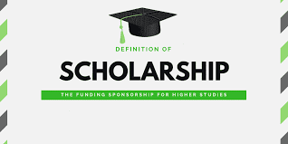
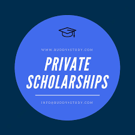

Important Scholorships
Goverment Scholorships
Vishwakarandak is organized every year, during the month of September/October. It is a 3-day event. During Vishwakarandak, a total of around 150+ events are conducted which can be segregated into four categories which include “ Technical”, “Sports”, ”Social”,” Extra-curricular”. The various events have been allotted some specific points, which are totaled up over the span of Vishwakarandak and on the basis of the point tally; one of the departments is declared the winner.
The organization of these events in managed by “LEAD”, the Student Council of VIT Pune, under whose leadership and guidance, separate teams are formed to ensure smooth execution and a stellar event experience during all the events. Each year a theme is decided for Vishwakarandak, which is central to the organization. The departments are allotted specific group names pertaining to the theme. For example: During Vishwakarandak 2016, the theme was “Quest for Justice”, and hence the various departments were categorized as the members of the Justice League, such as Batman, Superman, Green Lantern, etc.
The preparations for the event begin about almost a month prior to the actual event. An official opening and theme reveal ceremony is conducted, after which the publicity of the events begins, to garner asmuch participation as possible. To contribute towards the well-rounded development of the students, so that along with receiving academic knowledge, they get a chance to learn important life skills such as team- spirit, public speaking, presentation, organization amongst several others. Mélange is organized every year, during the month of either February or March. It is a 4-5 day event. During Mélange, a total of around 100+ events are conducted which can be segregated into four categories which include “ Technical”, “Sports”, ”Social”,” Extra-curricular”.
Private Scholorships
Vishwakarandak is organized every year, during the month of September/October. It is a 3-day event. During Vishwakarandak, a total of around 150+ events are conducted which can be segregated into four categories which include “ Technical”, “Sports”, ”Social”,” Extra-curricular”. The various events have been allotted some specific points, which are totaled up over the span of Vishwakarandak and on the basis of the point tally; one of the departments is declared the winner.
The organization of these events in managed by “LEAD”, the Student Council of VIT Pune, under whose leadership and guidance, separate teams are formed to ensure smooth execution and a stellar event experience during all the events. Each year a theme is decided for Vishwakarandak, which is central to the organization. The departments are allotted specific group names pertaining to the theme. For example: During Vishwakarandak 2016, the theme was “Quest for Justice”, and hence the various departments were categorized as the members of the Justice League, such as Batman, Superman, Green Lantern, etc.
The preparations for the event begin about almost a month prior to the actual event. An official opening and theme reveal ceremony is conducted, after which the publicity of the events begins, to garner asmuch participation as possible. To contribute towards the well-rounded development of the students, so that along with receiving academic knowledge, they get a chance to learn important life skills such as team- spirit, public speaking, presentation, organization amongst several others. Mélange is organized every year, during the month of either February or March. It is a 4-5 day event. During Mélange, a total of around 100+ events are conducted which can be segregated into four categories which include “ Technical”, “Sports”, ”Social”,” Extra-curricular”.
Scholorships-Portal
Vishwakarandak is organized every year, during the month of September/October. It is a 3-day event. During Vishwakarandak, a total of around 150+ events are conducted which can be segregated into four categories which include “ Technical”, “Sports”, ”Social”,” Extra-curricular”. The various events have been allotted some specific points, which are totaled up over the span of Vishwakarandak and on the basis of the point tally; one of the departments is declared the winner.